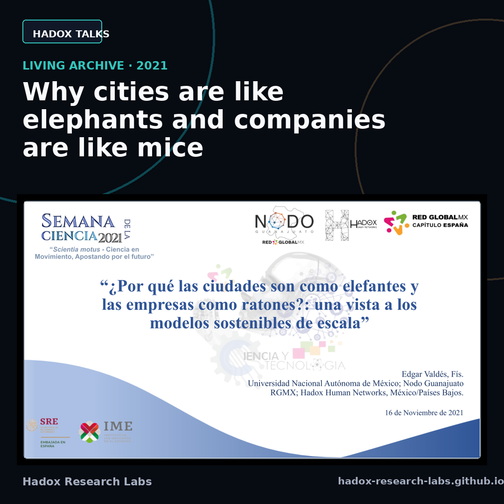
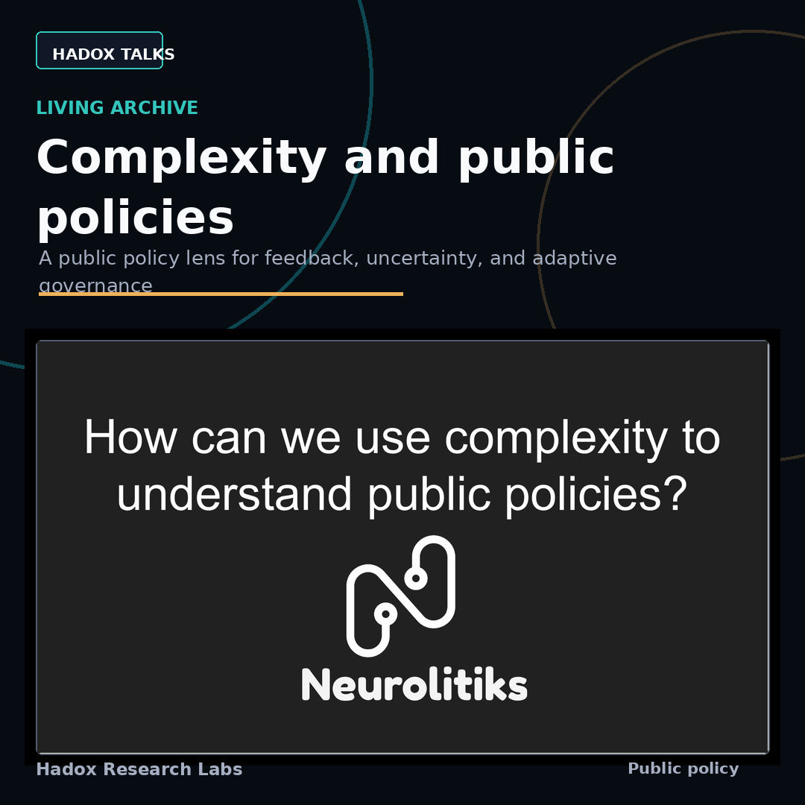

Why cities are like elephants and companies are like mice Original slides, enriched narration, and social handoff for a talk about scaling laws, urban complexity, and organizations. English Spanish Original slidesHadox Research Labs
Hadox Talks
Narrated public archive of talks, decks, and editorial packages by Edgar Valdes.

Complexity and public policies Original slides, enriched narration, and share-ready social copy for a short talk on feedback, uncertainty, and adaptive governance. English Original slides